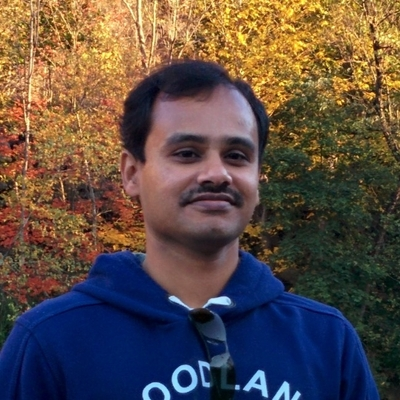

Suresh Thenrajan
Director, Software Development · IQVIA
Philadelphia, PA
A hands-on engineering leader with over 22 years of experience in cloud and distributed systems, specializing in open-source platforms for data-intensive analytics and production LLM workloads. Currently focused on building products and platforms using generative AI and distributed computing.